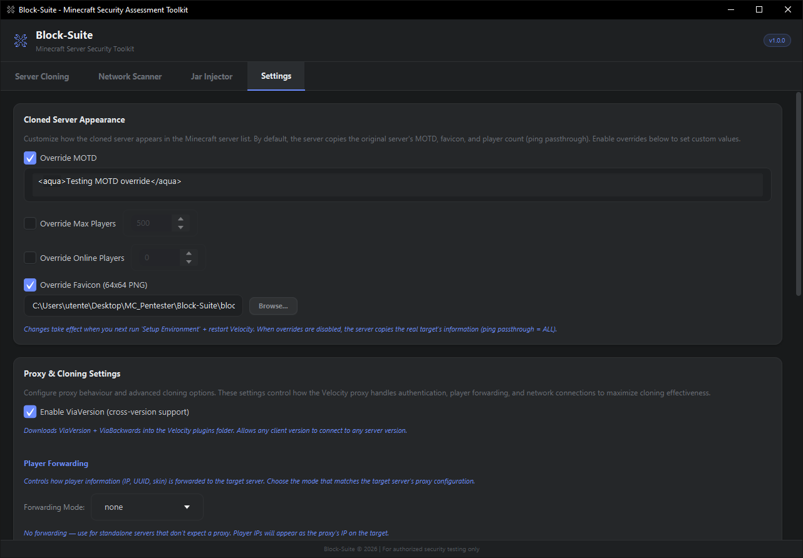
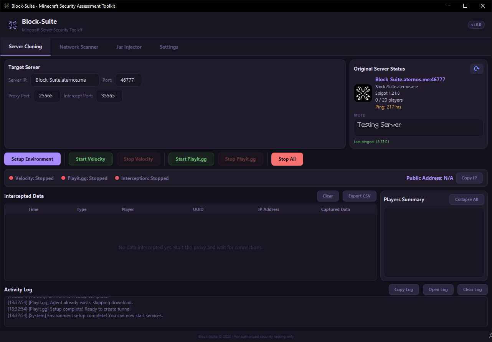
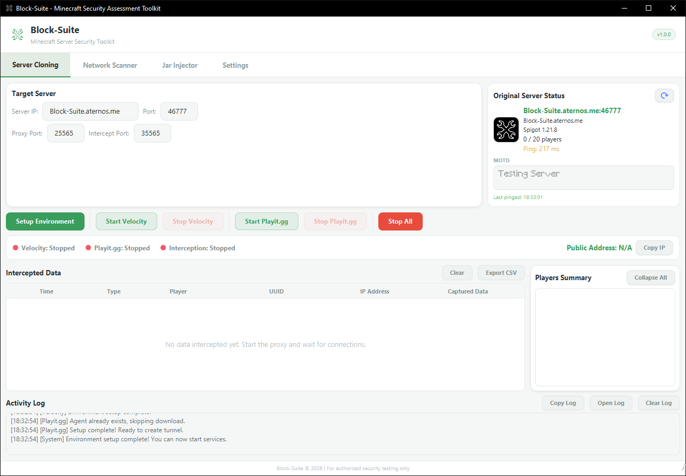

Settings
The Settings tab controls how the cloned server appears in the Minecraft server list, proxy behaviour, and the application theme. All settings are saved automatically to runtime/settings.json.
Cloned Server Appearance
By default, the proxy uses ping passthrough — it copies the real target server's MOTD, favicon, player counts, and version info directly. Enable overrides below to customize what players see in the server list.
Appearance changes take effect when you next run Setup Environment and restart Velocity. The proxy reads these settings during configuration generation.
Override MOTD
Replace the server's Message of the Day with your own text. Supports MiniMessage format:
<green>Welcome to <bold>My Server</bold></green>
<gray>Connecting...</gray>Default value: <aqua>My Custom Server</aqua>
Override Max Players
Set a custom maximum player count shown in the server list. Range: 1–99,999. Default: 500.
Override Online Players
Set a custom online player count. Useful for making the server appear busy. Range: 0–99,999. Default: 0.
Override Favicon
Replace the server's icon with your own image. Requirements:
- Must be a PNG file
- Ideally 64×64 pixels (auto-resized via bicubic interpolation if different)
- Click Browse... to pick the file

Proxy & Cloning Settings
This section is documented in detail on the Advanced Cloning page. Quick summary:
| Setting Group | Key Options |
|---|---|
| ViaVersion | Cross-version support — lets any Minecraft client version connect |
| Player Forwarding | Mode (none, legacy, modern, bungeeguard) + secret key |
| Authentication | Online mode, force key auth, prevent proxy, kick existing players |
| Network | HAProxy, TCP Fast Open, BungeeCord channel, compression, timeouts |
Application Themes
Block-Suite ships with 5 themes. The theme switches instantly — no restart required. All icons are automatically tinted to match the theme's accent color.
| Theme | Accent Color | Style |
|---|---|---|
| Default Dark | #6c8cff |
Dark background with blue accents |
| Green Suite | #3a9d5c |
Light background with green accents |
| Black Green | #4ade80 |
Dark background with bright green accents |
| Purple Suite | #7c5cbf |
Light background with purple accents |
| Black Purple | #a78bfa |
Dark background with lavender accents |
The theme selector shows color swatches (primary, accent, background) next to each option name for easy visual identification.


Auto-Update System
Block-Suite checks for updates on every launch by querying GitHub Releases. The update flow:
Version Check
Compares your current version against the latest release on GitHub using semantic versioning (e.g., 1.0.0 vs 1.1.0).
Update Required Overlay
If a newer version exists, a non-dismissable overlay appears showing:
- Version transition (e.g.,
v1.0.0 → v1.1.0) - Download size
- Changelog from the release notes
Install & Restart
Click Install Update. A progress bar shows download progress. After download, the update is verified (SHA256 checksum if available), extracted, and the app restarts automatically.
Updates are mandatory — you cannot skip them. This ensures all users run the latest version with bug fixes and security improvements.
If an update fails, an error message appears with a Copy Error button (for bug reports) and a Retry button.
Settings Storage
All settings are stored in runtime/settings.json as a JSON file. This includes:
- All appearance overrides (MOTD, max players, online players, favicon path)
- ViaVersion toggle
- All advanced proxy settings (forwarding mode, secret, online mode, HAProxy, timeouts, etc.)
- Selected theme
To reset all settings to defaults, delete runtime/settings.json and restart the app.